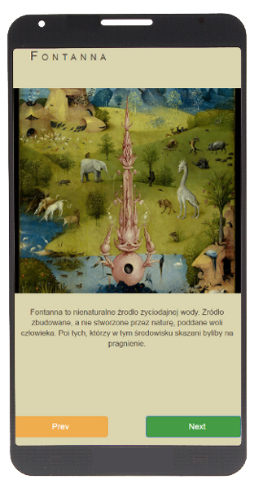

Podczas rozgrywki w dowolną grę fabularną mistrz gry często staje przed wyzwaniem improwizacji. Na szybko potrzebuje wymyślić bohatera niezależnego, lokację czy nawet całą scenę. Wielu z nas wspomaga się przy tym różnymi metodami. Jedną z nich jest używanie inspirujących kart np tarota. RPGDeck jest prostą, darmową aplikacją zawierającą dziesiątki ciekawych kart. Wystarczy jedno kliknięcie by pobudzić swoją wyobraźnię.
Wkrótce dostępna w GooglePlay